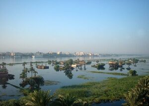

ⲉⲙⲏⲣⲉ S, ⲁⲙⲏⲓⲣⲓ B, دميرة, nn f, inundation, high water: Job 40 18 S (B ⲛⲓϣϯ ⲙⲙⲱⲟⲩ, cf ShA 1 395), Lu 6 48 S (B ⲙⲟⲩ ⲛϩⲱⲟⲩ ⲉⲩⲟϣ) πλήμμυρα, K 214 253 B ϯⲁ. نيل, Glos 436 S πλήμ. ⲧⲁⲛⲁⲃⲁⲥⲓⲥ ⲧⲉ., Mor 37 105 S river (canal) Lycus at time of ⲧⲉ. πλήμ. τ. ὑδάτων, ShRE 10 161 S ⲡⲙⲟⲟⲩ ⲛⲧⲉ. a wonder throughout Egypt, ShBM 194 3 S water of ⲧⲉ. ϩⲛⲧⲉϥϭⲓⲛⲉⲓ ⲙⲛⲧⲉϥϭⲓⲛⲃⲱⲕ, Mor 51 37 S summer, winter & ⲡⲥⲉⲉⲡⲉ ⲛⲛⲉϩⲟⲟⲩ ⲛⲉ., Nov Test Balestri xx, BM 81 S as rubric ⲧⲉ. (cf Leyd 153 inf; Wess 18 5). In place-name ?: ϯⲁⲙⲏⲣⲓ دميرة (Amélineau Géog 118).
(noun feminine)
earth
inundation, high water [πλημμυρα]

1: inundation, (high water)
complete
9a
ⲁⲙⲏⲓⲣⲓ B v ⲉⲙⲏⲣⲉ.
56a
Opposite:
| view | ϣⲁⲣⲕⲉ SB | (noun masculine) lack of water, drought [αβροχια]1970 |